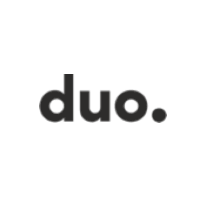

Blog
Check Who Visited
-

Business leader / Manager
Mr. Stijn Blomme of Webdoos, a digital company based in Brugge, was our guest speaker for business leader / manager. He is the company's founder and holds a bachelor's degree in informatics. He established the company on his own during his second attempt of his first year of study, and it has now grown into a partnership. His lack of expertise and baby-faced appearance have made it difficult for him to get work. Delhaize is one of the clients Webdoos works with. This presentation taught me that you are never too young to start your own business, but you must master all of the necessary skills firsthand and specialize in one area.
The presentation's centerpiece was the emphasis on communication.
-

Drupal/Backend Developer
Nick Veenhof of Drop strong gave the lecture, which focused on Drupal and backend growth. Nick began with giving a brief history of Drupal, with a focus on Dries Buytaert, the company's founder. Dries' three birthday wishes for Drupal, which turned 21 in January, making it older than other technologies, were the key selling point of the talk. The first wish was for Drupal to never cease evolving, the second was for Drupal to continue developing with an emphasis on ease-of-use, and the third was for Open Source to be sustained and scaled through economic structures.
The future of Drupel as a framework was one of the other main topics he highlighted. The focus was on Drupal 10, the most recent version, which includes React.js for frontend development and automatic upgrades. Also, Drupal is well-known for its security, particularly among huge organizations like NASA and Tesla.
-

Drupal/Backend Developer/Freelance
Kristof is the founder and manager of Trivali Web Development, a lochristi-based firm. He primarily works with PHP for backend development. And his presentation was mostly focused on three concepts: Drupal, Backend, and Freelancing. Drupal is a Belgian-developed open source content management system. In Trivali, large-scale websites are built with Drupal, whereas small-scale sites are built with Web Pres. Considering that WebPress and dropal are both written in PHP. PHP was used extensively throughout the presentation's back end.
He also had a lot of experience with freelance work, and he provided us advice like making sure we obtain a contract for at least a month, doing research on the company you're going to work for before hand to avoid any misunderstandings, and specializing in one or two domains and doing them well.
-
Marketing Automation
Our guest speaker for Marketing Automation was Thomas Vercamer of Intractor, a company based in Gent. The presentation concentrated on the principles of marketing automation. It was divided into three parts: the first was theory-based, where we learned about marketing automation and the pillars of effective marketing, which included sending a relevant message to the right person at the right time; the second part was supposed to be practical, where we put theory into action; and the third part was supposed to be for questins and answers, but due to unforeseen technical issues, the exercises had to be postponed.
-

Front-end development
Jos De Berdt is a Front-end Developer at Sweet Mustard in Kortrijk. As a result of his past work expertise, he also takes on the role of Team Lead. His talk will be on the company where he works, how they operate, and what we can learn from them as future developers. Practice what you preach, he said, emphasizing the significance of communication. If you appear to know a lot, show it in your code/projects.
Jos gave us an excellent overview of how a front-end developer gets started, the tools he use, and his work ethic. This presentation has piqued my interest in continuing to learn, grow, and collaborate on exciting initiatives as a group.
-

Front-End Development & UI/UX Designer
The focus of the presentation was on design and development. Geoffrey and Maud of starring Jane, a digital and marketing firm in Gent, were the guest speakers. The flow from UX: data collecting and strategies to UI designer translating UX ideas and strategies to a design (wireframes) and finally to a Developer who analyzes and constructs a website based on the designer's design concept and wireframes was a major feature of the presentation.
Communication is essential during the flow to avoid any setbacks, both internally and externally.
-

Life-choices
Our guest speaker on life choices was Mr Riem Kerckhof of Duo nv, Brugge. He previously worked as a smartphone developer and in sales marketing before joining Duo as a solution architect. The focus of the lecture was on the choices you make as a developer in order to attain work-life balance. He chose this topic to inform us about other web development possibilities and firms in case the one we chose isn't precisely what we wanted to do, and also to keep us from becoming locked in a job or company that we don't enjoy.
He talked on basic principles like being honest when you don't understand something and being versatile as a developer by looking for new technologies. Taking the initiative, working as part of a team, and developing code that can be tested by others before being deployed. He emphasizes the significance of finding job that you enjoy, identifying your abilities, finding a company that fits your needs, and talking openly with your boss.
-
Workflow Development / Project Management
The charming ladies of starring jane, Maaike, and Elke were our visitors for workflow development/project management. Their presentation focused on project management and workflow development.Project management is described as the procedure of managing a team's efforts to meet all project objectives within the restrictions set out. Typically, this data is described in project documentation, which is prepared at the start of the development process. Scope, time, and budget are the three main restraints.
They mentioned project management techniques like Agile, which divides the product development process into tiny, manageable development cycles known as sprints. You can incorporate user input at the conclusion of each cycle as you break down your project into various sprints.